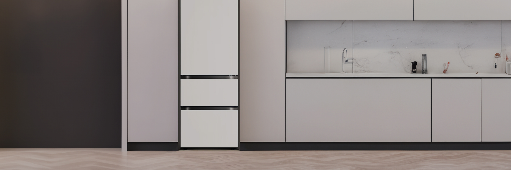

주방김치냉장고


보다 더 스마트한 일상
LG ThinQ의 시작

보다 더 스마트한 일상, LG ThinQ
씽큐는 사람과 가전을 AI 기술로 연결하여 더 편리하고 놀라운 일상을 만드는 LG전자의 스마트 홈 플랫폼입니다.
* 본 콘텐츠는 ThinQ 앱의 콘텐츠입니다.
김치에 흰색 막이 생겼어요! 버려야 하나요?
할머니께서는 씻어서 먹으면 괜찮다고 하시는데 진짜 먹어도 될까요?
김치 표면에 생기는 흰색 막을 '골마지'라고 불러요.
흔히 '골마지'라 부르는 흰색 막은 김치를 숙성, 보관하는 과정에서 김치 표면에 생길 수 있는 산막효모에요. 특히, 김치를 오래 보관하거나 저염 김치일 때 혹은 김치가 공기에 노출될 때 잘 생긴다고 해요. 그다지 먹음직스럽진 않아 보이죠? 곰팡이가 아닌가 생각이 들기도 해요.
다행히 골마지에는 독성 유전자가 없어 골마지가 생긴 부분을 버리거나 물에 씻으면 먹을 수 있어요. 세계김치연구소에서 실험으로 밝힌 결과라고 하니 안심하고 드세요!
골마지 예방법
씻어 내고 먹어도 된다고 하지만 김치에 골마지가 안 생겼으면 더 좋겠어요. 방법이 있을까요?
김치가 산소와 접촉하는 걸 막아야 해요. 김치 뚜껑을 덮기 전에 우거지를 덮기나 소금을 뿌려주세요. 그리고 일반 냉장 보관보다는 [김치보관 맛지킴(중)]에서 보관하면 골마지가 생기는 것을 줄일 수 있어요.
김치냉장고에 보관하기만 해도 골마지는 잘 생기지 않아요.


LG ThinQ
ThinQ 하나로 더 좋아지는 일상
일상을 더 편하고 스마트하게 만들어주는 씽큐 앱을 지금 바로 만나보세요.
- #김치
- #김치냉장고
- #김치냉장고사용법
- #김치보관
- #김치냉장고보관
- #골마지
- #하얀골마지
- #골마지예방법
- #김치숙성
출처 및 고지사항
· 세계김치연구소 미생물기능성 연구단 연구결과에 따르면 골마지 효모에는 독성 유전자가 없으며
세계김치연구소 발효조절 기술연구단의 가이드상 골마지는 공기와 닿는 김치 표면에만 존재하기 때문에
골마지가 낀 부분의 김치 부위만 제거 후 식용 가능하며 물에 씻어서 식용할 수 있습니다.
[중앙일보] 묵은지 위에 생긴 허연 골마지는 곰팡이 아닌 효모 덩어리 >
· [세계김치연구소] 김치 보관 숙성 중에 생성될 수 있는 골마지에 대한 과학적 자료 >
· [LG 전자] 김치에 곰팡이 같은 흰색 효모가 있어요 >